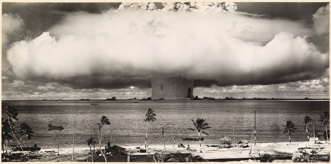

Welcome to the best destination on the World Wide Web!!!
Winner of the "Best Dang Webring" award 1996
- (12 Jan 96) A few more emacs commands I've been using were added to the cheat sheet.
- (11 Jan 96) Tired today. Added some icons to the sidebar so it's visually clear which lines are links and which lines are titles.
- (04 Jan 96) As usual, edits come in closely clustered bursts. I've rehauled the computing tab to be a little more useful - the old notes there were from a time I was still getting used to things.
- (02 Jan 96) Halfway through the decade already? Time sure is flying by! I'm working on a lot of subtle but crucial workflow edits here so that I can get to the tinkering stage. The discontinuous pushes are always hardest...
- (15 Dec 95) The converted LaTeX for my prelim study flashcards have been added to the physics tab. This page was converted using the latex2html package. Now that I've discovered this, I expect to use it more often.
- (17 Oct 95) Not the greatest I've ever been at consistent updates... but I'm still going at it. There's a new secret file on this website that links to my setup config files now, so that I can quickly install a new machine and get it workable. The "computing" tab will probably be obliterated soon and replaced with my setup configuration instructions (it's nothing but clutter in my head, but needs to be retained.)
- (14 Sept 95) Today's update was an under the hood rehaul, but nothing that should have been noticeable by the average visitor. Some dumb things have been removed from the computing page.
- (29 Aug 95) Not much is being added to the site today, but it seems like most of the terminal packages I've been playing with will be made obsolete by emacs + org mode. Perhaps I should use this mode to create a todo list and keep it here.
- (24 Aug 95) More functional content changes today. The links page now has a few links, with formatting for categories going forward. Now if only I could find a good icon for each link...
- (23 Aug 95) Today I started learning C. With some luck, I'll find inspiration on how to streamline the site as I work through basic tutorials.
- (21 Aug 95) After an extended period of being worn down from all angles, I have begun to transition from Vim to Emacs. My notes on basic commands have been uploaded to the computer tab, and will be updated as I become more sophisticated.
- (11 Aug 95) It's a medium sized update this week. Added a new page for storing the linux config files I use often. This page will probably have more helpful notes to myself in the future. Look forward to it.
- (06 Aug 95) Site debut! I will be working to bring you new and exciting content over the next few months. Send me any suggestions you may have!
- (21 Jan 97) Ever since I unplugged my computer during that update the title text has been acting up. Oh well.
- (06 Jan 97) Happy new year! Did you watch the ball drop in Times Square? This is a small update on the side while I try to get back into work mode (breaks always throw me right out of it). Some page structure has been fixed to be more friendly to micro-updates. More importantly, the clock widget has been rehauled to give the correct time if the minutes or seconds were between 0 and 9. As an example, before it would display 12:34:9, and now it should properly read 12:34:09. The greetings really need to be more original...
- (23 Dec 96) It's about time for Christmas so I'll be taking some time off until the new year. In the meantime, I think I'll try to get some of this new JavaScript stuff working. This totally changes what we can do with websites; this can't possibly go wrong!
- (13 Aug 96) It's hard to believe since not much content has been released, but we've won a "Best Dang Webring" award! The certificate should arrive in the mail soon, and once it does I will be sure to scan it. Thank you for all your support!